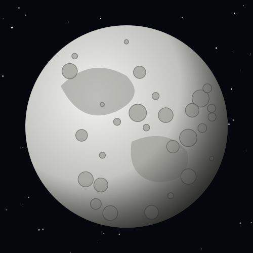
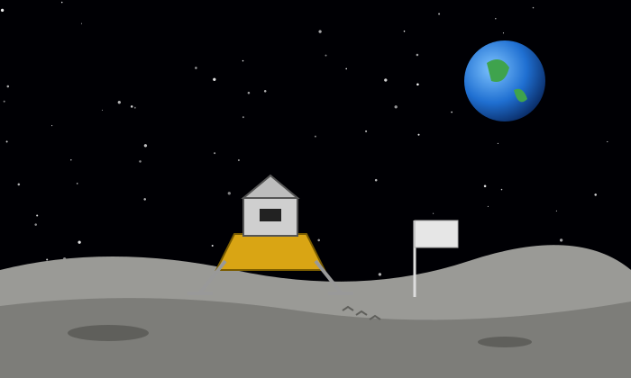

Our Companion
The Moon most likely formed about 4.5 billion years ago when a Mars-sized object crashed into the young Earth and blasted debris into orbit.
It has almost no atmosphere, so meteoroids hit it freely, leaving the craters that cover its surface. The dark patches you can see from Earth are ancient plains of hardened lava called maria (Latin for "seas").

Moon Facts
- SizeAbout 3,475 km across, a little more than a quarter of Earth's width.
- DistanceOn average 384,400 km from Earth.
- OrbitCircles Earth every 27.3 days; a full cycle of phases takes about 29.5 days.
- GravityAbout 1/6 of Earth's, so a 60 kg person would feel like 10 kg.
- Same faceThe Moon is tidally locked, so we always see the same side from Earth.
- TemperatureFrom about 127 °C in sunlight to about −173 °C at night.
- Visitors12 astronauts walked on the Moon during the Apollo missions (1969–1972).
Explore the Moon's Phases
The Moon doesn't make its own light. As it orbits Earth, we see different amounts of its sunlit side. Drag the slider through one 29.5-day cycle.
New Moon
0% of the visible side is lit

Footprints on the Moon
On July 20, 1969, Apollo 11 astronauts Neil Armstrong and Buzz Aldrin became the first people to walk on the Moon.
Because there is no wind or rain on the Moon, their footprints are probably still there today.